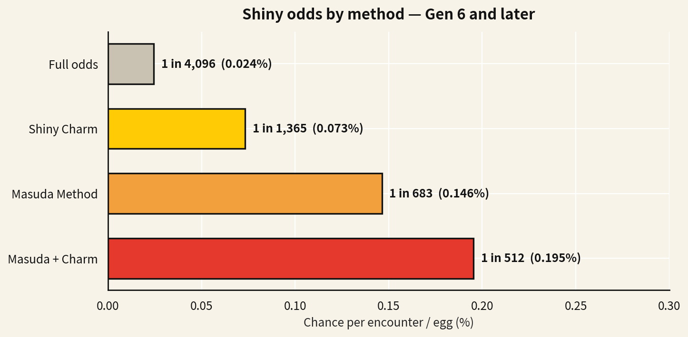

What Are Full Odds? The 1/8192 Baseline
A shiny Pokemon is just a differently colored variant — same stats, same moves, no gameplay advantage whatsoever. People hunt them purely because they're rare. "Full odds" means hunting with zero help: no charm, no breeding tricks, no sandwiches, nothing. You against the base rate. And from Gold and Silver in 1999 all the way through Black 2 and White 2, that base rate was a brutal 1 in 8,192.
That number isn't some designer's vibe, by the way — it's fallout from 16-bit math. In those games the engine compared a hidden personality value against a range that left exactly 8 winning combinations out of 65,536. 8/65,536 boils down to 1/8,192, or 0.0122% per encounter. You were never meant to see one. My Zubat was a genuine accident of arithmetic.
Here's the part that trips people up: at full odds the "average" hunt is 8,192 encounters, but averages lie. Every encounter is an independent roll, so about 36.8% of hunters go the entire 8,192 without a single sparkle, and roughly 13.5% go double that distance with nothing to show for it. That's not bad luck, that's just how the distribution works. If you want to turn a rate into "how many encounters for a 90% chance," the Pokemon Shiny Odds calculator does that conversion for any game and method — I keep it open during long hunts.
Base Shiny Odds by Generation
The base rate has changed exactly once in the entire history of the series. Pokemon X and Y (Gen 6, 2013) quietly doubled everyone's luck, widening the winning range from 8 to 16 out of 65,536 — 1 in 4,096, about 0.0244%. Every mainline game since then, including Legends: Arceus, the Let's Go pair, and Scarlet and Violet, starts from that 1/4,096 base before any boosts. So if someone tells you shinies "used to be rarer," they're right, and they're underselling it — they were twice as rare, for fourteen years.
| Generation / Era | Games | Base shiny odds | As a percentage |
|---|---|---|---|
| Gen 2 | Gold, Silver, Crystal | 1 in 8,192 | 0.0122% |
| Gen 3 | Ruby, Sapphire, Emerald, FireRed, LeafGreen | 1 in 8,192 | 0.0122% |
| Gen 4 | Diamond, Pearl, Platinum, HeartGold, SoulSilver | 1 in 8,192 | 0.0122% |
| Gen 5 | Black, White, Black 2, White 2 | 1 in 8,192 | 0.0122% |
| Gen 6 | X, Y, Omega Ruby, Alpha Sapphire | 1 in 4,096 | 0.0244% |
| Gen 7 | Sun, Moon, Ultra Sun, Ultra Moon, Let's Go | 1 in 4,096 | 0.0244% |
| Gen 8 | Sword, Shield, BDSP, Legends: Arceus | 1 in 4,096 | 0.0244% |
| Gen 9 | Scarlet, Violet | 1 in 4,096 | 0.0244% |
One Gen 2 quirk I love: back then shininess came from IVs instead of a personality value. The odds landed on the same 1/8,192, but the mechanic underneath was completely different — which is why a Gen 2 shiny transferred into modern games keeps its weird stat spread to this day.
How the Masuda Method Works: the 1/683 Math
The Masuda Method is named after Game Freak director Junichi Masuda, who slipped it into Diamond and Pearl without telling anyone. Breed two Pokemon from games of different real-world languages — my English Ditto and a Japanese Garchomp have done serious overtime together — and every egg gets several shiny rolls instead of one. In Gen 4 and 5 that's five rolls per egg, moving the rate from 1/8,192 to about 1/1,639. From Gen 6 onward it's six rolls against the doubled base rate: 6/4,096, which simplifies to about 1 in 683, or 0.146% per egg.
The thing most guides miss is that "extra rolls" isn't a metaphor — it's literally the mechanism. The game doesn't make one roll luckier; it just runs the check again and again and counts any hit as a success. That's why the gains are multiplicative in rolls rather than percentage points, and it's why Masuda stacks so beautifully with anything else that adds rolls. One catch: it only applies to eggs. Wild encounters, raids, static Pokemon — the method doesn't touch them.
Stacking the Shiny Charm: the Road to 1/512
The Shiny Charm is the reward for completing the Pokedex, and it permanently adds two extra rolls to every eligible check for the rest of your save file. On its own in a modern game, that takes 1/4,096 to about 1/1,365 (3/4,096). Nice. But here's where it gets fun: the charm and Masuda both add rolls, and rolls simply add together. Six Masuda rolls plus two charm rolls is eight rolls per egg — 8/4,096, exactly 1 in 512, or 0.195%. That 1/512 is the number you see tattooed across every shiny hunting stream, and now you know it's just 6+2 over 4,096.

Same logic, bigger numbers: Scarlet and Violet pile on Sparkling Power sandwiches and mass outbreaks, while Legends: Arceus adds research levels and outbreak bonuses up to an absurd 32 rolls per spawn — 1 in 128, the best rate any mainline game has ever offered. Sword and Shield tracked your knockouts per species and slipped in extra rolls after 500 battles. Once you spot the pattern, every shiny hunting "method" stops being folklore: they're all just extra rolls, and you can verify each one yourself.
Now the cold water, because I've been on the wrong end of it: these are per-encounter probabilities, not timers. Even at the glorious 1/512 rate, there's still a 14.2% chance of going a full 1,000 encounters with nothing. I once went 3,400 eggs deep on a Masuda hunt with the charm equipped and started genuinely wondering if my game was bugged. It wasn't. Nothing is ever "due" — the math promises long-term averages, not mercy, and anyone who tells you different is selling something.
Calculate Your Own Shiny Odds
Tables are great for the common cases, but your hunt is yours: maybe you've got the charm and no foreign Ditto, maybe you're chaining outbreaks in Paldea, maybe you're doing a masochist full-odds run in HeartGold for the bragging rights. Plug your actual setup into our Pokemon Shiny Odds calculator — pick your game, toggle the boosts you really have, and it'll give you the rate as a fraction and percentage, the average hunt length, and the chance of at least one shiny within whatever encounter count you're planning. It's how I decide whether a hunt is a weekend project or a personality trait. And if the math says "maybe next month," the Random Shiny Pokemon Generator will deal you a shiny right now, no 4,096-encounter grind required.